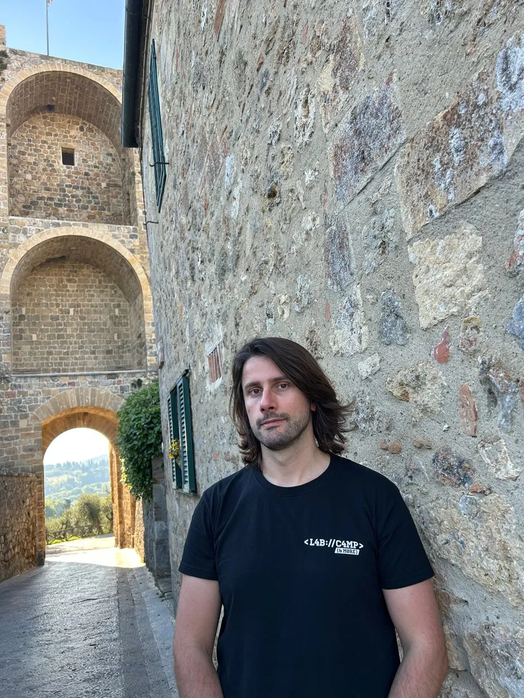

Videogame Developer
Klajdi
Myftari
I craft interactive experiences and games using Unity3D and Unreal Engine — from mechanics to polish.
See my work ↓I craft interactive experiences and games using Unity3D and Unreal Engine — from mechanics to polish.
See my work ↓
as a game developer passionate about Unity3D and Unreal Engine, I love building everything in videogames — gameplay mechanics, 3D, textures, UI, physics systems, and the small details that make a game feel alive. My work lives at the intersection of code and creativity.
Currently, I am exploring procedural generation, VFX, and real-time 3D experiences for the gaming world.
Open to collaborations, game jams, freelance work, or just a good conversation about game dev.
CONTACT ME →